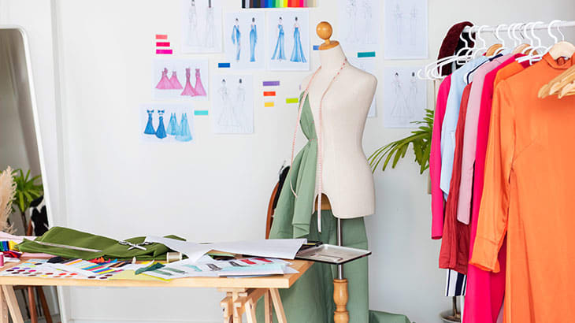
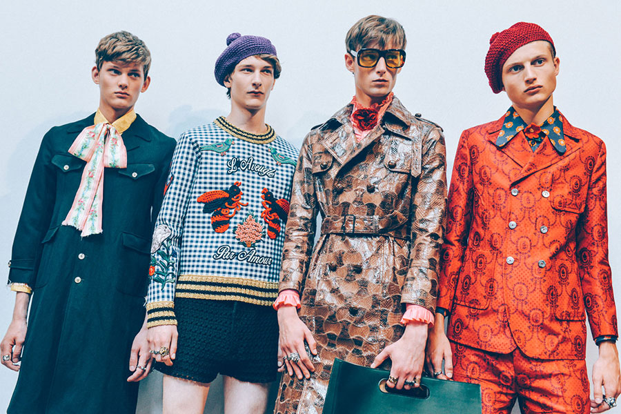
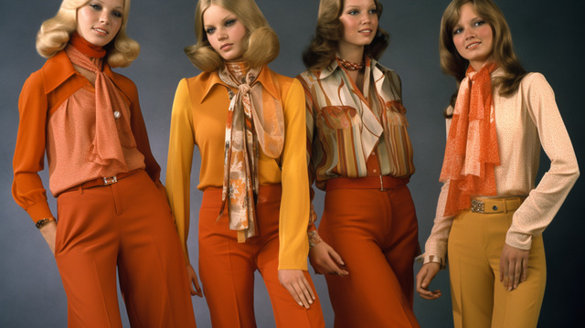

<link rel="stylesheet" type="text/css" href="css/style-fashion.css">

<section id="hero-carousel" class="carousel slide" data-bs-ride="carousel">
  <div class="carousel-inner">
    <div class="carousel-item active">
      <div class="hero-slide d-flex align-items-center" style="background-color: #3f784c; height: 70vh;">
        <div class="container d-flex align-items-center">
          <div class="hero-text col-md-6 position-relative">
            <h1 class="text-white">The world<br><span class="text-highlight">current fashion</span></h1>
            <p class="text-white">
              What's happening now in fashion trends, style, and innovation.
            </p>
            <a href="#" class="btn btn-dark mt-3">Contact Us</a>
            <div class="triangle-decor top-left"></div>
          </div>
          <div class="hero-image col-md-6 text-center">
            
          </div>
        </div>
      </div>
    </div>
    <div class="carousel-item">
      <div class="hero-slide d-flex align-items-center" style="background-color: #5c9a72; height: 70vh;">
        <div class="container d-flex align-items-center">
          <div class="hero-text col-md-6 position-relative">
            <h1 class="text-white">Explore More<br><span class="text-highlight">About Fashion</span></h1>
            <p class="text-white">
              Discover the latest ideas and trends in the fashion industry.
            </p>
            <a href="#" class="btn btn-light mt-3">Learn More</a>
            <div class="triangle-decor top-right"></div>
          </div>
          <div class="hero-image col-md-6 text-center">
            
          </div>
        </div>
      </div>
    </div>
  </div>
  <!-- Carousel Controls -->
  <button class="carousel-control-prev" type="button" data-bs-target="#hero-carousel" data-bs-slide="prev">
    <span class="carousel-control-prev-icon" aria-hidden="true"></span>
    <span class="visually-hidden">Previous</span>
  </button>
  <button class="carousel-control-next" type="button" data-bs-target="#hero-carousel" data-bs-slide="next">
    <span class="carousel-control-next-icon" aria-hidden="true"></span>
    <span class="visually-hidden">Next</span>
  </button>  
</section>


<section class="content-section">
  <div class="container">
    <div class="row my-5">
      <div class="col-md-6 position-relative">
        <h2>fashion worldwide - statistics</h2>
        <p>Sustainable fashion is a difficult concept to define, as there are many different criteria and phrases used to assess a clothing item’s sustainability: ‘plastic-free’, ‘organic’, ‘recycled’, among others.
           Some of these can even be contradictory; an item made of recycled plastic could be considered sustainable,
           but others would argue that the plastic still has a negative effect on the environment.</p>
        <a href="https://www.statista.com/topics/9543/sustainable-fashion-worldwide/#topicOverview" target="_blank">
          <button class="btn btn-success">Learn More</button>
        </a>
        <div class="triangle-decor bottom-left"></div>
      </div>
      <div class="col-md-6">
        
      </div>
    </div>
    <div class="row my-5">
      <div class="col-md-6 order-md-2 position-relative">
        <h2>The State of Sustainability in the Fashion Industry!</h2>
        <p>In today’s fashion landscape, sustainability has become a powerful force, compelling brands to reassess their operations and present an eco-conscious image. As consumer demand for ethically sourced products grows, fashion companies are recognizing the need to adopt concrete measures for responsible practices. 
          From sourcing materials to manufacturing processes, a comprehensive approach to sustainability is emerging, aiming to address the industry’s environmental impact.</p>
        <a href="https://infomineo.com/sustainable-development/the-state-of-sustainability-in-the-fashion-industry/" target="_blank">
          <button class="btn btn-success">Learn More</button>
        </a>
        <div class="triangle-decor bottom-right"></div>
      </div>
      <div class="col-md-6 order-md-1">
        
      </div>
      <div class="row my-5">
        <div class="col-md-6 position-relative">
          <h2>Fast Fashion vs. Slow Fashion</h2>
          <p>
            Fast fashion has revolutionized the clothing industry with its rapid production cycles and trendy designs. 
            However, it comes at a cost—waste, labor exploitation, and environmental damage. 
            In contrast, slow fashion advocates for mindful consumption, promoting quality over quantity and ethical practices. 
            Which side are you on?
          </p>
          <a href="https://cosh.eco/en/articles/slow-versus-fast-fashion" class="btn btn-success">Discover More</a>
          <div class="triangle-decor top-left"></div>
        </div>
        <div class="col-md-6">
          
        </div>
      </div>
  
      <!-- Row 2 -->
      <div class="row my-5">
        <div class="col-md-6 order-md-2 position-relative">
          <h2>Fashion and Technology</h2>
          <p>
            Wearable tech, smart fabrics, and AI-driven designs are shaping the future of fashion. 
            From self-cleaning shirts to 3D-printed garments, technology is pushing boundaries and offering consumers a unique blend of functionality and style. 
            The possibilities are endless.
          </p>
          <a href="https://fashinnovation.nyc/what-is-fashion-tech/" class="btn btn-success">Explore Innovations</a>
          <div class="triangle-decor bottom-right"></div>
        </div>
        <div class="col-md-6 order-md-1">
          
        </div>
      </div>
  
      <!-- Row 3 -->
      <div class="row my-5">
        <div class="col-md-6 position-relative">
          <h2>Local Artisans in Global Fashion</h2>
          <p>
            Local artisans are bringing their cultural heritage to the forefront of global fashion. 
            Handmade designs, traditional textiles, and intricate craftsmanship highlight the beauty of cultural preservation while supporting small communities.
          </p>
          <a href="https://www.unik.style/blog/articles/the-ripple-effect-the-impact-of-supporting-local-artisans-on-global-fashion" class="btn btn-success">Support Local</a>
          <div class="triangle-decor top-left"></div>
        </div>
        <div class="col-md-6">
          
        </div>
      </div>
  
      <!-- Row 4 -->
      <div class="row my-5">
        <div class="col-md-6 order-md-2 position-relative">
          <h2>The Rise of Gender-Fluid Fashion</h2>
          <p>
            Gender norms in fashion are evolving, with more brands embracing gender-fluid designs. 
            These collections prioritize inclusivity, breaking traditional stereotypes and offering clothing that fits all identities. 
            Celebrate self-expression through style.
          </p>
          <a href="https://heuritech.com/articles/gender-fluid-fashion/" class="btn btn-success">Learn More</a>
          <div class="triangle-decor bottom-right"></div>
        </div>
        <div class="col-md-6 order-md-1">
          
        </div>
      </div>
  
      <!-- New Unique Section -->
      <div class="row my-5">
        <div class="col-12 text-center">
          <h2>Fashion Through the Ages</h2>
          <p>
            Explore how fashion has evolved over the decades, from roaring 20s glamour to futuristic minimalism. 
            Each era brings unique trends, reflecting societal changes, artistic influences, and technological advancements.
          </p>
        </div>
        <div class="col-md-4 text-center">
          
          <h5>1920s: The Flapper Era</h5>
          <p>Free-spirited designs, short hemlines, and bold accessories.</p>
        </div>
        <div class="col-md-4 text-center">
          
          <h5>1970s: Boho Chic</h5>
          <p>Flowy fabrics, vibrant prints, and a focus on individuality.</p>
        </div>
        <div class="col-md-4 text-center">
          
          <h5>2000s: Y2K Revival</h5>
          <p>Metallics, futuristic silhouettes, and nostalgic throwbacks.</p>
        </div>  
    </div>
  </div>
</section>

<!-- Button to Play Video -->
<section class="video-section text-center my-5">
  <h2>Watch the video to learn more about current fashion!</h2>
  <button type="button" class="btn btn-primary btn-lg mt-3" data-bs-toggle="modal" data-bs-target="#videoModal">
    <i class="fa-solid fa-play"></i>
  </button>
</section>

<!-- Modal -->
<div class="modal fade" id="videoModal" tabindex="-1" aria-labelledby="videoModalLabel" aria-hidden="true">
  <div class="modal-dialog modal-lg">
    <div class="modal-content">
      <div class="modal-header">
        <h5 class="modal-title" id="videoModalLabel">Current Fashion Trends</h5>
        <button type="button" class="btn-close" data-bs-dismiss="modal" aria-label="Close"></button>
      </div>
      <div class="modal-body">
        <!-- Embed Video -->
        <div class="ratio ratio-16x9">
          <iframe id="videoFrame" src="https://www.youtube.com/embed/dQw4w9WgXcQ" 
          title="YouTube video" 
          allow="accelerometer; autoplay; clipboard-write; encrypted-media; gyroscope; picture-in-picture" 
          allowfullscreen></iframe>
        </div>
      </div>
    </div>
  </div>
</div>

<script>
  const videoModal = document.getElementById('videoModal');
  const videoFrame = document.getElementById('videoFrame');

  videoModal.addEventListener('hidden.bs.modal', function () {
    // Stop video playback by resetting the iframe source
    videoFrame.src = videoFrame.src;
  });
</script>